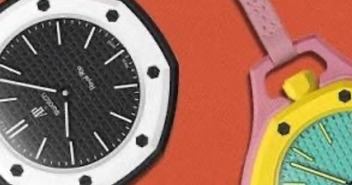

AP x Swatch: A Missed Opportunity

Stormzy once said, ‘I’m still disappointed.’ Honestly, that’s exactly how I feel after the AP x Swatch reveal.
When the teasers first started dropping, my friends and I were genuinely excited. The watch community was buzzing. It felt like we were about to get another cultural moment like the MoonSwatch. Something fun, wearable, and accessible that still respected the DNA of the original.
Instead… we got a pocket watch on a lanyard.And look, I understand brands wanting to protect exclusivity. I understand AP not wanting to fully ‘MoonSwatch’ the Royal Oak. But this somehow landed in the worst middle ground possible. It’s not serious enough for traditional AP collectors, and it’s not wearable or exciting enough for younger buyers who actually wanted to participate in the collaboration.
That is the frustrating part. The excitement was real. Even friends of mine who are not deep into watches were talking about it. AP and Swatch had everyone paying attention.
Now? Nope.
It feels like they completely misunderstood why the MoonSwatch worked in the first place. People were not asking for a cheaper Royal Oak. They wanted something that captured the feeling and culture around one of the most iconic watches ever made.
Maybe the Royal Pop still sells out instantly. Maybe collectors eventually embrace the weirdness. But first impressions matter, and this honestly feels like one of the biggest missed opportunities the watch industry has had in years.